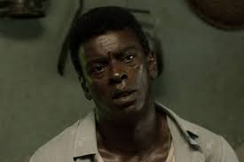
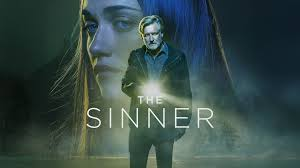
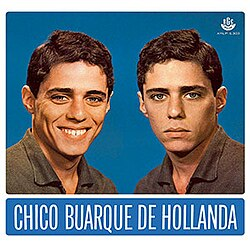
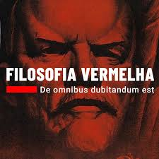
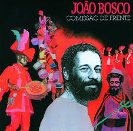
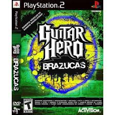
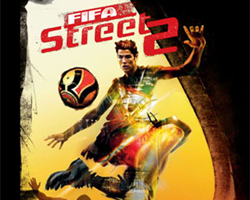

Filmes & Séries
"A arte não é um espelho para refletir o mundo, mas um martelo para moldá-lo."


Música & Podcasts
"A" música não é um objeto físico estático (como uma pintura), mas um processo de notação que exige uma interpretação ativa."



Games & Tech
"A classe operária tudo produz, a ela tudo pertence."

